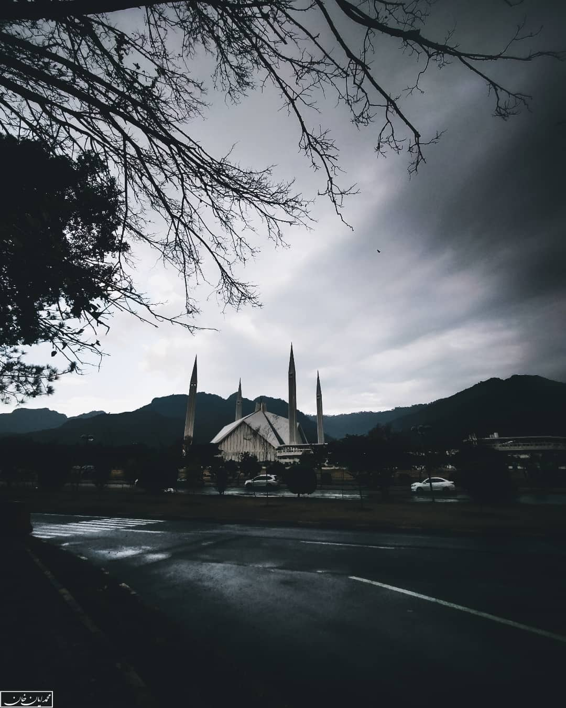
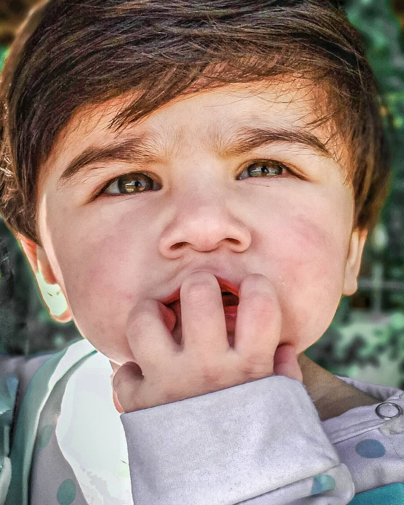

Muhammad Ayan Khan / Creative
The Creative Side
Photography and video — capturing moments with an artist's eye and telling stories beyond the frame.
Photography
I capture portraits, landscapes and street photography. A selection of work is shown below; the full gallery lives on its own page.




Video & Reels
The clips below are the videos already used on the homepage. Their original titles were not supplied, so they are labelled Video 1–3.
Other Creative Work
Beyond photography and video, my creative output includes writing — from the book “Hope That Never Ends” to content about growth and ideas.
[PLACEHOLDER — Add any other confirmed creative projects, with links or images.]